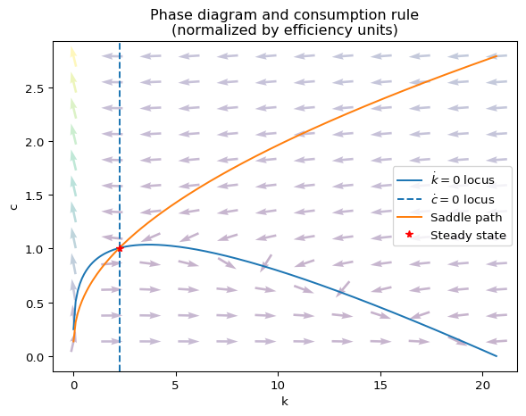
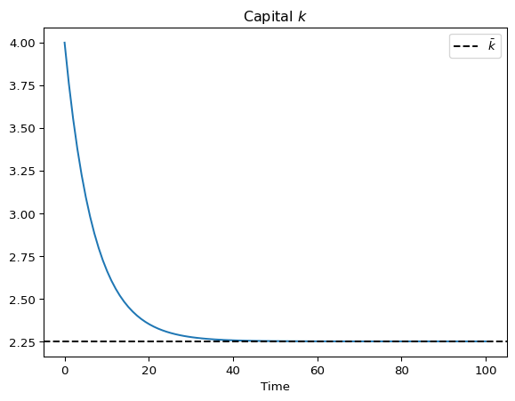
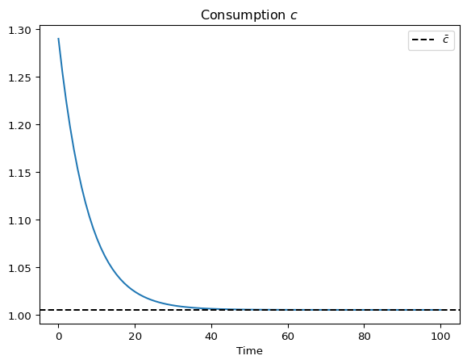
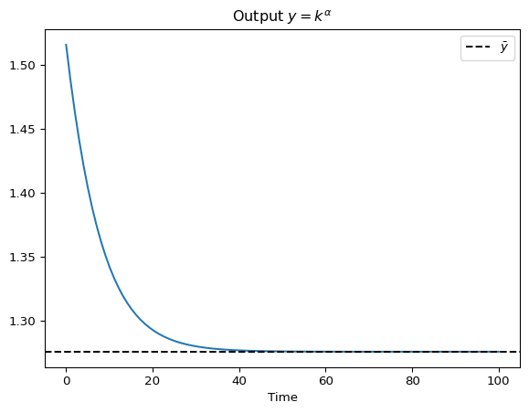

# Preamble
import numpy as np
import matplotlib.pyplot as plt
from scipy.integrate import odeint
from scipy import interpolate
# Class implementation
class RCKmod:
# """
# A class representing Ramsey/Cass-Koopmans growth models.
# """
def __init__(self,rho,alpha,theta,xi,delta,phi):
# """
# Inputs:
# - rho: relative risk aversion coefficient for CRRA utility.
# - alpha: capital's share of production in Cobb-Douglas output function.
# - theta: time preference/discount rate.
# - xi: population growth rate.
# - delta: capital depreciation rate.
# - phi: labor productivity growth rate.
# """
# Assign parameter values
self.rho = rho
self.alpha = alpha
self.theta = theta
self.xi = xi
self.delta = delta
self.phi = phi
# Create empty consumption function
self.cFunc = None
# Maximum capital
self.kmax = (1/(self.phi + self.xi + self.delta))**(1/(1-self.alpha))
# Steady state capital
self.kss = (alpha/(theta + xi + delta + rho*phi))**(1/(1-alpha))
# Steady state consumption
self.css = self.kss**alpha - (xi + delta + phi)*self.kss
# Steady state output (y_ss = k_ss^alpha)
self.yss = self.kss**self.alpha # <-- NEUE BERECHNUNG
# Solve the model to create its consumption function
self.solve()
def output(self,k):
# """
# Cobb-Douglas normalized production function
# """
return(k**self.alpha)
def dcdt(self,c,k):
# """
# Consumption differential equation
# """
dc = c/self.rho*(self.alpha*k**(self.alpha - 1) - self.theta - (self.xi + self.delta) -self.rho*self.phi)
return(dc)
def dkdt(self,c,k):
# """
# Capital differential equation
# """
dk = self.output(k) - c - (self.phi + self.xi + self.delta)*k
return(dk)
def dcdk(self,c,k):
# """
# Differential equation for the time elimination method.
# This corresponds to dc/dk = (dc/dt)/(dk/dt)
# """
return(self.dcdt(c,k)/self.dkdt(c,k))
def solve(self, eps = 10**(-8), npoints = 400):
# """
# Solves for the model's consumption rule through the time elimination method.
# Parameters:
# - eps: disturbance used to prevent dc/dk from becoming 0/0 at
# the steady state value of capital.
# - npoints: number of points used on each side of the steady
# state capital for solving the dc/dk equation.
# """
# K ranges
k_below = np.linspace(self.kss,0.0001,npoints)
k_above = np.linspace(self.kss,self.kmax,npoints)
k = np.concatenate((k_below,k_above)).flatten()
# Solve for c on each side of the steady state capital,
# adding a distrubance to prevent dc/dk = 0/0.
c_below = odeint(self.dcdk, self.css - eps, k_below)
c_above = odeint(self.dcdk, self.css + eps, k_above)
c = np.concatenate((c_below,c_above)).flatten()
# Create consumption function as an interpolation of the
# numerical solutions.
self.cFunc = interpolate.interp1d(k,c)
def dkdt_opt(self,k,t):
# """
# Differential equation for k assuming optimal c decisions.
# """
return(self.dkdt(self.cFunc(k),k))
def k_dynamics(self,k0,t):
# """
# Simulates optimal capital dynamics from a given starting point.
# Parameters:
# - t : vector of time points at which to solve for capital
# - k0: value of capital at t[0]
# """
k = odeint(self.dkdt_opt, k0, t)
return(k)
def k0locus(self,k):
# """
# Returns the consumption value that leaves a given ammount of
# effective capital unchanged.
# """
return(self.output(k) - (self.phi + self.xi + self.delta)*k)
def phase_diagram(self, npoints = 200, arrows = False, n_arrows = 5):
# """
# Plots the model's phase diagram.
# - npoints: number of ticks in the k axis.
# - arrows: boolean to indicate whether or not to draw arrow
# grid.
# - n_arrows: controls the number of arrows in the grid
# """
k = np.linspace(0.01,self.kmax,npoints)
# Plot k0 locus
plt.plot(k,self.k0locus(k),label = '$\\dot{k}=0$ locus')
# Plot c0 locus
plt.axvline(x = self.kss,linestyle = '--', label = '$\\dot{c}=0$ locus')
# Plot saddle path
plt.plot(k,self.cFunc(k), label = 'Saddle path')
# Plot steady state
plt.plot(self.kss,self.css,'*r', label = 'Steady state')
# Add arrows ilustrating behavior in different parts of
# the diagram.
# Taken from:
# http://systems-sciences.uni-graz.at/etextbook/sw2/phpl_python.html
if arrows:
x = np.linspace(k[0],k[-1],n_arrows)
y = np.linspace(self.cFunc(k[0]),self.cFunc(k[-1]),n_arrows)
X, Y = np.meshgrid(x,y)
dc = self.dcdt(Y,X)
dk = self.dkdt(Y,X)
M = (np.hypot(dk, dc))
M[ M == 0] = 1.
dk /= M
dc /= M
plt.quiver(X, Y, dk, dc, M, pivot='mid', alpha = 0.3)
# Labels
plt.title('Phase diagram and consumption rule\n(normalized by efficiency units)')
plt.xlabel('k')
plt.ylabel('c')
plt.legend()
plt.show()
# Create and solve model
RCKmodExample = RCKmod(rho = 2,alpha = 0.3,theta = 0.02,xi = 0.01,delta = 0.08,phi = 0.03)
RCKmodExample.solve()
# Test the consumption rule
print('Consumption at k = %1.2f is c = %1.2f' % (RCKmodExample.kss/2, RCKmodExample.cFunc(RCKmodExample.kss/2)))
RCKmodExample.phase_diagram(arrows= True, n_arrows = 12)
# Create grid of time points
t = np.linspace(0,100,100)
# Find capital dynamics at the desired time points and with
# a given starting capital
k0 = 4
k = RCKmodExample.k_dynamics(k0,t)
# Plot Capital
plt.plot(t,k)
plt.axhline(y = RCKmodExample.kss,linestyle = '--',color = 'k', label = '$\\bar{k}$')
plt.title('Capital $k$')
plt.xlabel('Time')
plt.legend()
plt.show()
# Find consumption
c = RCKmodExample.cFunc(k)
# Plot Consumption
plt.plot(t,c)
plt.axhline(y = RCKmodExample.css,linestyle = '--',color = 'k', label = '$\\bar{c}$')
plt.title('Consumption $c$')
plt.xlabel('Time')
plt.legend()
plt.show()
# Find and plot Output y = k**alpha <-- NEUER ABSCHNITT
y = RCKmodExample.output(k)
# Plot Output
plt.plot(t,y)
plt.axhline(y = RCKmodExample.yss,linestyle = '--',color = 'k', label = '$\\bar{y}$')
plt.title('Output $y = k^{\\alpha}$')
plt.xlabel('Time')
plt.legend()
plt.show()Consumption at k = 1.13 is c = 0.75


